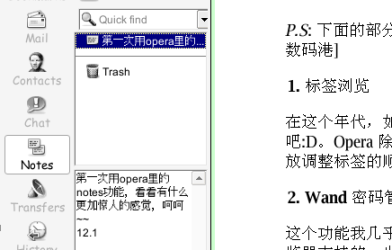
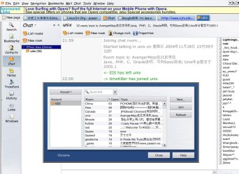
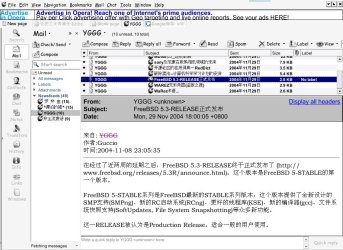

最近更新: 2006-02-22
本页目录
下面的 banner 有介绍，:)
P.S: 下面的部分图片和文字来自蠢夫数码港
在这个年代，如果浏览器不支持标签浏览，就太落后了，把 IE 丢掉吧:D。Opera 除了支持大量标签，自定义标签栏的位置，还可以以鼠标方式拖放调整标签的顺序，方便吧？
这个功能我几乎不用，对自己的机器新任度还不够哈。其实这个功能蛮多浏览器支持的，也没什么好介绍的了，比我还要懒的兄弟姐妹自己试试吧~
你希望把自己的 Opera 的界面变成什么样？Opera 给你很多选择，笔记、下载管理、历史、邮件、IRC 聊天……让你作主，随你安排。
Opera 7 新加的功能，碰到需要粘贴保存的东西，不用把整个网页都保存下来，也不必再打开什么文本编辑器，再复制粘贴，只需要随手把它贴到笔记里即可。方便吧？
而且笔记中还可以自建文件夹分类，保存笔记，配备了搜索功能，不必再担心自己保存的东西忘了放哪儿，或者把自己的东西搞得乱糟糟的~

SlideShow 功能，面对大量图片，你只需点击 Fast Forward(快进)键，Opera 就可以为你慢放所有图片，按下 F11 进入全屏模式，慢慢欣赏吧~
Opera 皮肤的精美，是我用过这么多浏览器中最好的，而且下载使用很方便，只需访问 Opera 皮肤下载站点，点击后 Opera 就可以自动下载并应用。Opera 皮肤成百上千，快试试看吧~
难道只有 MyIE、Firefox 支持鼠标手势？其实还有Opera，而且键盘快捷键和鼠标手势这些在 Opera 里面都是可以自定义的，什么动作代表什么意思，随心所欲~
IE 里面有集成收发邮件的工具吗？Opera 有，且支持丰富，能在如此小的地方继承这么多功能，实在不简单。(Opera 安装文件只有2~3M，完全安装后也只有8M 左右)
简单的文档演示工具，文档格式是 html，配合 CSS 定义的网页全屏演示，不错的。不过我一直没使用过，有此需要的兄弟姐妹可要自己挖掘了~
这里有个 OperaShow 的英文教程
在 Opera 上 IRC，保存 Blog 下的 RSS，还有……


心动不如行动，干吗不下载一个 Opera 试试呢，M$、Linux、FreeBSD 下的都有~
这里有我的朋友 Boyu 写的 Opera 的使用经验介绍，全部都是图片讲授~很棒吧？
有什么问题，你也可以联系 Boyu，他也是一位 Opera 的“粉丝” ，联系方式是 boyualex At yahoo.com.cn
P.S: 可以用 Opera 的 SlideShow 来慢慢欣赏了
<<30 天让你对 Opera 7 爱不释手>>，英文版，同时还有俄语以及荷兰语的版本，可惜没有中文的 :(
作者是个 Opera 的老“粉丝”了，文章比较长，但是相当专业。
新加坡的 Opera 粉丝翻译的<<30 天让你对 Opera 7 爱不释手>>，正在不断地更新当中。